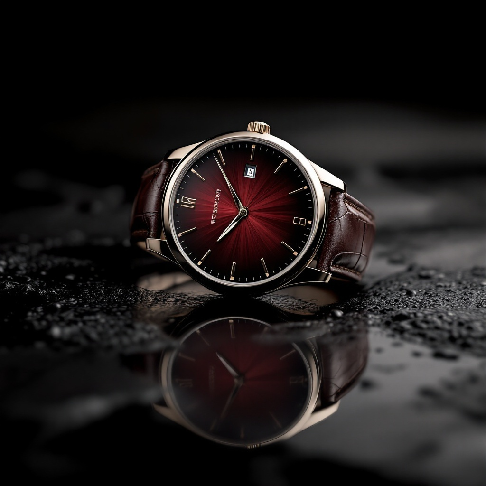
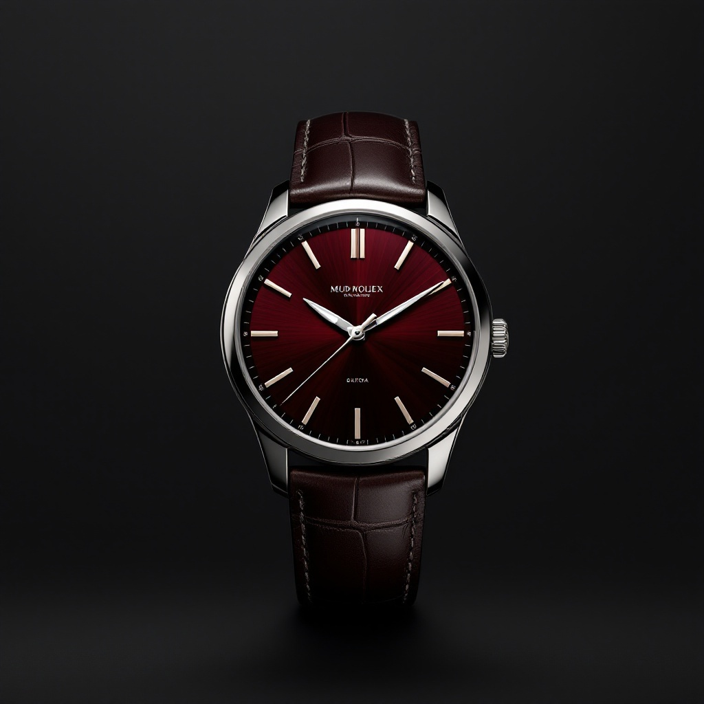
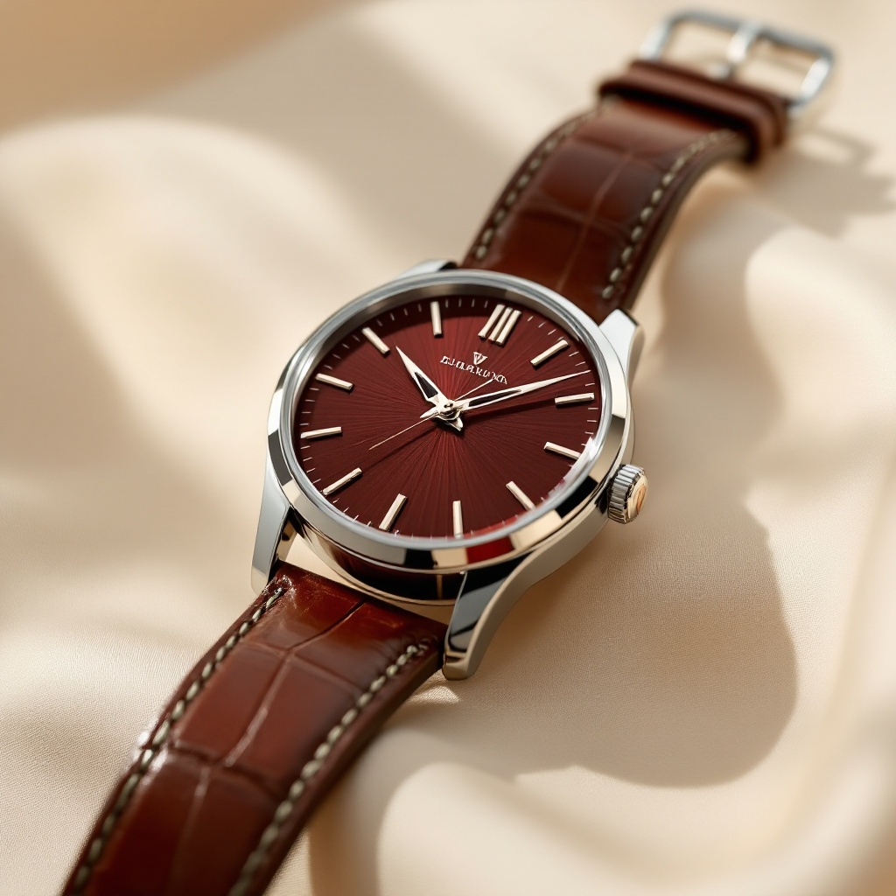

MAISON IU — Hero: 3 чистых направления (без камней)
Гранатовый циферблат в цвет бренда. Выбери фон hero — на него пересоберём scroll-scrub орбиту.

A
Тёмная рефлекс-поверхность
Часы на гладкой тёмной поверхности с отражением. Иммерсивно, кинематографично, тёмный hero + светлый сайт ниже.

B
«Парящие» на градиенте
Часы парят на тёмном градиенте, без поверхности. Максимально чисто и минималистично, фокус только на предмете.

C
Светлый ivory-hero
Часы на кремовом фоне — единый светлый стиль со всем сайтом. Легко, чисто, editorial (регистр INO/VCA).